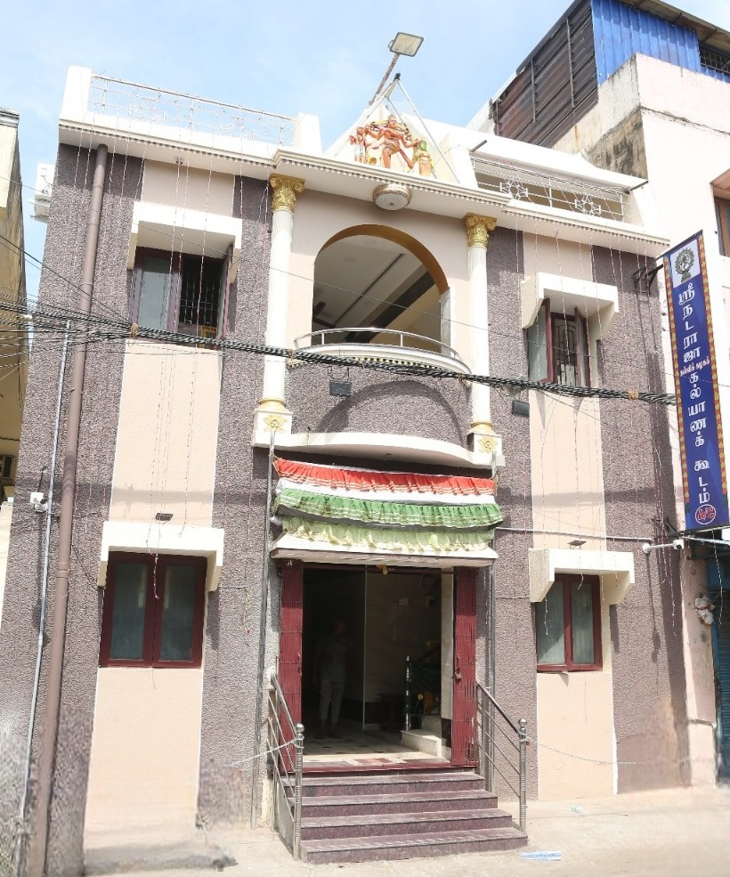

Sri Nataraja Thirumana Mandapam

Sri Nataraja Kalvi Kazhagam not only operates as an educational organization but also functions as a university, awarding honorary degrees to individuals who have excelled in the three Tamil arts of literature, music, and drama.
On July 27, 1947, under the chairmanship of the Speaker of the Madras Legislative Assembly, Thiru. J. Sivasanmugam Pillai, Sri Natarajaa Educational Institution made history by bestowing the title of 'Kalaivanar' upon the legendary comedian Thiru. N. S. Krishnan, who earned his name in early tamil cinema through his thought provoking humor, during a ceremony presided over by the father of Tamil drama, Thiru. Pammal Sambandha Mudaliar.
In its eleventh year, on June 10, 1956, the portrait of "Nadaga Semmal" Auvai T.K. Shanmugam was unveiled by Thiru. Devan, who was the managing editor of the popular weekly magazine Ananda Vikatan. On November 22, 1959, the institution honored the artist community by awarding the title of 'Kalaimani' to tamil film actor Thiru. R.S. Manohar. This honor was conferred by the Speaker of the Madras Legislative Assembly, Thiru. Dr. U. Krishna Rao, in the presence of the renowned film star Thiru. Gemini Ganesan.
Tamil speech competition for school students in the memory of Kodai Vallalal Thiru. M. Kuppusamy Naikkar, who was one of the most important people for the establishment of the Kazhagam's Marriage Hall, and Tamil Thendral who inaugurated the Kazhagam's Library Thiru.Vi.Ka. along with tamil essay writing competition is held for students in their memory and prizes are given during the annual function which has led to encouragement in education among the students.